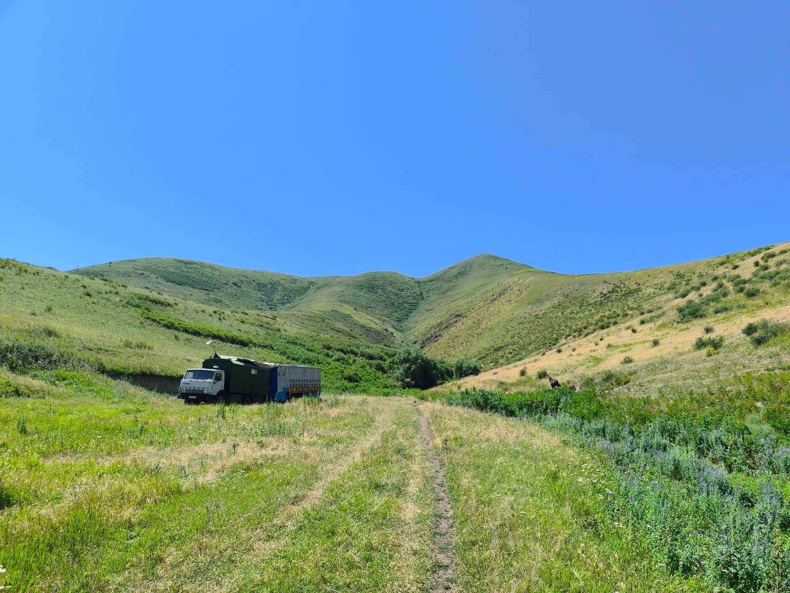

Мобильная пасека и производство

Наша пасека — это современное хозяйство «на колёсах». Мы используем мобильный пчелопавильон, который позволяет перевозить ульи вслед за самым пышным цветением. 42 сильные, здоровые пчелиные семьи ежедневно трудятся, чтобы давать стабильный, 100% натуральный продукт. А благодаря современной медогонке откачка мёда происходит быстро, бережно и с соблюдением всех гигиенических стандартов, сохраняя каждую каплю пользы.